codly.number
A displayed line number in a Codly code block; number-set_ configures its style and number-show_ replaces its rendered content.
Signature
codly.number(number, parent, ..fields)number and parent are required positional fields; the remaining fields are named. Codly normally creates these elements while rendering codly.new.
Fields
| Field | Type | Default / required | Meaning |
|---|---|---|---|
number |
none | content | int | array<int> |
Required | Value to display; none suppresses it. |
parent |
any |
Required | Parent content of the line. |
numbering |
str | function |
numbering.with("1") |
Numbering pattern or callback used for integer values. |
align |
alignment | none |
left + horizon |
Alignment of the number in its cell. |
placement |
"inside" | "outside" | none |
"inside" |
Whether the number column sits inside or outside the code block. |
fill |
auto | paint | none |
auto |
Number-cell background; auto follows the corresponding code row's fill. |
Behavior
An integer is formatted with numbering; an integer array is passed as multiple numbering values. A content value is displayed directly, and number: none displays nothing. Numbering functions receive the integer value, or the array’s values as separate arguments. number-set_(..fields) sets scoped fields with #show:. number-show_(it => ...) receives the number element as it and replaces it; it does not receive a dictionary of field overrides.
The placement setting applies to the number column for code blocks in scope. Outside placement also positions any configured gutters outside the code.
Example
The switch moves the rendered line-number column outside the code block.
#import "@preview/codly:2.0.0" as codly
#show: codly.number-set_(placement: if number-outside { "outside" } else { "inside" })
#codly.new(
```txt
first line
second line
```,
)Edit & run on your device
The controls supply the example variables. Their definitions are hidden here; Copy code includes the current values and your edits.
